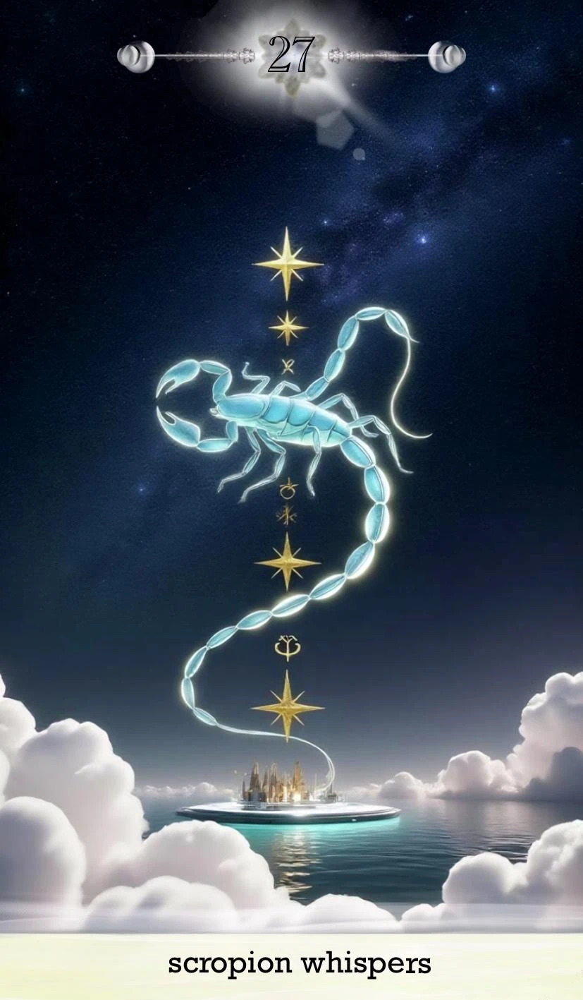

CONDITION A / NO BOOKLET
Image → Initial record → AI dialogue → Reflection
Neither the participant nor the AI receives the trial’s Booklet entry.
04 / INTERPRETATION · EXPLORATORY RESEARCH · 2026
AI-Mediated Interpretation of Ambiguous Visual Stimuli
What becomes observable when AI enters before an initial interpretation has stabilized?
I study how people describe their first feelings, the cues they notice, and the possible sources of an interpretation as contextual information and AI dialogue enter the process.
The focus is on expressed accounts of interpretation forming: what can be articulated, questioned, retained, or left uncertain. Feeling, interpretation, confidence, and meaning ownership are recorded separately.
Study 0B — Revised Exploratory Pilot
Protocol v1.4 · Data collection underway · Updated 9 October 2026
THE QUESTION
Experience, perception, interpretation, and articulation do not arrive as one finished answer. The cards allow a first response to emerge while several readings remain possible.
When AI enters this interval, how do people express what may have contributed to their response? Can an exchange clarify something already felt, introduce a different frame, or strengthen a reading without changing it?
The cards provide ambiguous visual prompts. They have no single correct interpretation and serve no diagnostic purpose.

FROM EARLIER STUDY 0 TO STUDY 0B
Earlier sessions placed the Booklet before AI dialogue. They raised a source question: written framing had already entered the process. Protocol v1.4 now compares two information arrangements within a participant.
CONDITION A / NO BOOKLET
Neither the participant nor the AI receives the trial’s Booklet entry.
CONDITION B / WITH BOOKLET
The participant and AI receive the same frozen entry. A separate post-booklet record preserves the stage before AI enters.
Each new participant is scheduled for three distinct cards: two A trials and one B trial. The protocol permits up to eight substantive AI replies per trial, with early stopping and no prescribed role for each turn.
The order is documented and balanced where feasible. Three trials belong to one participant; they are not three independent people. A trial following B may still carry prior framing or interview experience.
A shared opening invites participants to notice feelings and thoughts, disagree with AI, remain uncertain, or stop. Initial responses are therefore first records within this setting, rather than a wholly unguided psychological baseline. The intended AI role preserves participant interpretive authority and distinguishes visible cues, participant statements, Booklet content, and AI-introduced associations.
IMPLEMENTATION NOTE
The first recorded three-trial sequence, B–A–A, has been completed. Review of Maxine’s transcript identified a mismatch between runtime settings and the embedded AI prompt.
The runtime specified eight replies while the embedded prompt retained a three-reply ceiling. The AI announced endings before the exchange had reached the revised allowance.
The older prompt assumed Booklet input and restricted knowledge to supplied material. These clauses conflict with v1.4’s explicit A/B inputs and revised knowledge boundary.
The exported transcript records successive trial setups in one conversation. Protocol v1.4 specifies an isolated session per card; actual context separation requires verification.
These records document an implementation under review. They cannot be treated as fully protocol-aligned repetitions of the revised conditions. A corrected assembled prompt must receive a distinct subversion, with pre- and post-correction records kept separate.
WHAT I TRACK
How participants name cues, memories, feelings, or external information that may have contributed to an initial response.
What felt experience remains recognizable, and what the participant’s verbal reading retains, elaborates, questions, or replaces.
How certain the participant feels about a current reading, recorded separately from interpretation change.
What the participant attributes to the image, personal experience, Booklet, or AI, including jointly formed or indistinguishable sources.
An exploratory awareness-clarity self-rating accompanies open accounts. It is not a validated measure of consciousness. Coding distinguishes participant-initiated statements, AI-prompted answers, researcher questions, and retrospective interviews. A clearer feeling, a changed explanation, and increased confidence can diverge.
PARTICIPANT ACCOUNTS
Names below are pseudonyms. Selected Chinese excerpts are reproduced with permission; English translations accompany them. Participant reports, AI output, and researcher interpretations retain their own source labels.
SHUTING / EARLIER BOOKLET PHASE · 8 OCTOBER
Shuting described an initial response shaped by comfortable colors and familiar visual elements. The Booklet’s biological emphasis felt different from this overall visual experience.
In the closing interview, she reported rejecting the AI’s early direction and asking it to respond to the whole image, rather than individual parts. She described the dialogue as making a broad feeling more precise while following the direction she wanted to explore.
“光从图片看感受范围比较笼统，ai帮我把我准确的感受凝练成一个清晰的点”
“From the image alone, my feeling was quite broad; AI helped condense what I felt into a clearer point.”
PARTICIPANT REPORT
“第一幅图前两个问题我就否定他并且矫正它的方向来迎合我的需求”
“For the first image, I rejected its direction in the first two questions and corrected it to respond to what I needed.”
ANALYTICAL QUESTION
When participants steer AI toward a preferred direction, does the exchange clarify an experience, reinforce a desired reading, or do both?
These are field-record and interview accounts, not a reconstructed turn-by-turn transcript. Shuting also reported that the short dialogue left some questions unanswered.
MAXINE / STUDY 0B IMPLEMENTATION UNDER REVIEW · B–A–A
“我对图片的感受没有发生变化，对图片的信息解释发生了变化”
“My feeling toward the images did not change; my explanation of the information in them changed.”
In the stick-insect trial, the conversation moved from color and background to Maxine’s tactile memories of moss. She then asked whether her initial feeling was right. This documents a request for validation alongside reflection on possible sources of feeling.
In the closing interview, Maxine said the process helped her identify contributing elements more clearly. She also said AI could analyze reasons without necessarily understanding her feeling.
WHAT THIS ACCOUNT MAKES VISIBLE
A feeling can remain stable while its explanation becomes more specific. Seeking an explanation, seeking confirmation, and accepting AI-added meaning are separate actions.
This is a participant’s retrospective account, not evidence that AI independently caused greater awareness. The sequence belongs to the implementation note above.

MAXINE / WOODLOUSE · RECORDED AS CONDITION A
Maxine asked why the image included the moon, sun, and a yin–yang symbol.
The AI introduced cultural associations and biological claims, then linked them to the image. These additions belong to the AI’s contribution; they are not evidence of the artist’s intended meaning or verified biological findings.
After asking further questions, Maxine connected ecological circulation to yin–yang transformation.
The AI enthusiastically validated and extended this connection. The exchange raises a question about how supplied knowledge and affirmation shape a reading that feels participant-led.
Source: exported dialogue, trial 3. The post-AI current-meaning field for this trial was left incomplete. The transcript supports the interaction sequence, not a complete paired outcome or an isolated AI effect.
EARLIER STUDY 0 / CHUNSHUO · BUTTERFLY
The butterfly exchange brings a specific tension into view: the participant tests the AI’s stance while the AI continues to reinforce a reading already under consideration.

The butterfly first felt somewhat uncanny to the participant.
The participant asked whether the AI was simply flattering them. The AI characterized its reading as independent, then continued to favor an uncanny interpretation.
I observed increased confidence in the participant’s subsequent responses to this interpretation.
The dialogue documents a question about AI credibility. It does not establish that the AI’s reading was independent or that the participant explicitly reflected on how their own initial interpretation formed. The confidence observation belongs to my field account.
QUESTION RAISED
What happens when an AI presents an interpretation as independent while continuing to reinforce one already under consideration?
EXAMPLE
Standardized contextual material from the earlier booklet phase. In Study 0B, a matching frozen entry is supplied only in Condition B.

The written frame gives the participant further material through which to reconsider the image. Its place in the protocol makes the Booklet a distinct contextual intervention.
Study material reproduced as used. The Chinese column translates the supplied English source; the passage includes metaphorical and cultural framing.
Scorpions are a contradiction where danger and motherhood coexist.
Beneath the Pincers and Tail: It usually lurks quietly in rock crevices, sand, or fallen leaves, maintaining a low-profile form like an inconspicuous dead leaf or gravel. But once it raises its pincers and arches its venomous tail, it instantly becomes a terrifying hunter. This symbolizes that “beneath silent forbearance lies lethal power and explosive strength.”
Phototaxis and Bioluminescence: Scorpions are mostly nocturnal, preferring dark, dry corners to avoid bright light. Interestingly, its exoskeleton fluoresces under ultraviolet light, like a faint green lantern in the dark. In ancient Egyptian mythology, the scorpion goddess Serket protected both poison and medicine; in folklore, it is often seen as a symbol of death and revenge. It is like a “phantom in the dark,” both frightening and mesmerizing.
Within the Venom: A scorpion’s venom can paralyze prey and defend against natural enemies, while also being studied in medicine for drug development. Meanwhile, a mother scorpion carries her young on her back until they become independent, revealing a rare tenderness beneath her cold exterior. It is both a predator and a mother; it brings death, yet safeguards new life. This reveals the law where “poison and love, killing and nurturing are intertwined with one another.”
Therefore, a scorpion is not just a terrifying venomous creature; it is more of a metaphor for nature: beneath a lethal exterior, tenderness may still exist; in the dark corners, protection and new life may also be hidden.
蝎子是一个危险与母性并存的矛盾体。
钳与尾之下：它通常静静潜伏在岩缝、沙地或落叶间，低调得像不起眼的枯叶或碎石。但当它举起双钳、弓起带毒的尾部，便会瞬间成为令人畏惧的猎手。这象征着“沉默的隐忍之下，潜藏着致命的力量与爆发力”。
避光与生物荧光：蝎子大多夜行，偏爱黑暗、干燥的角落，以避开强光。有趣的是，在紫外线照射下，它的外骨骼会发出荧光，仿佛黑暗中一盏微弱的绿灯。在古埃及神话中，蝎子女神塞尔凯特守护着毒与药；在民间传说中，蝎子常被视为死亡与复仇的象征。它像“黑暗中的幽灵”，既令人恐惧，也令人着迷。
毒液之中：蝎毒可以麻痹猎物、抵御天敌，也被用于医学和药物开发研究。与此同时，母蝎会将幼蝎背在身上，直到它们能够独立生活，展现出冷峻外表下罕见的温情。它既是捕食者，也是母亲；带来死亡，也守护新生。这揭示了“毒与爱、杀戮与养育彼此交织”的法则。
因此，蝎子不只是令人恐惧的毒性生物，也像自然的一种隐喻：致命的外表之下仍可能存在温柔；幽暗的角落里，也可能藏着保护与新生。
EARLIER STUDY 0 / EIGHT PATHWAYS
A pseudonym-labelled overview of the earlier coding snapshot. These summaries track the source and sequence of observable expressions across eight trials.
| Trial / stimulus | Trace in the record | Evidence boundary |
|---|---|---|
| Ahao · T1 · Aphid | The participant distinguished initial color and texture impressions from doubts that arose after reading the Booklet. | The source-and-order account followed a direct AI question. |
| Ahao · T2 · Spider wasp | The participant introduced a new association before the first AI reply, then described how it arose during a second look. | The interpretation preceded AI; the timing account followed an AI prompt. |
| Chunshuo · T1 · Scorpion | After questions about its source, the participant described the feeling as naturally arising intuition. | A later AI explanation about feeling preceding detail was not confirmed by the participant. |
| Chunshuo · T2 · Butterfly | The participant questioned whether the AI was flattering them or expressing its own stance. | A credibility inquiry does not establish reflection on the formation of one’s own reading. |
| Lizi · T1 · Treehopper | The participant connected first-look discomfort to conflicting colors. | A later question about when another association formed went unanswered. |
| Lizi · T2 · Giant silk moth | The participant described a visual impression that the Booklet subsequently confirmed and deepened. | This retrospective account followed a prompt distinguishing image and text. |
| Mona · T1 · Stimulus mapping under review | The participant raised a contrast between visual cues and written framing before the first AI reply. | The embedded image and runtime label differ; the actual upload needs verification. |
| Mona · T2 · Ladybug | A later protective interpretation followed biological information and a metaphor introduced by AI. | The sources are entangled; the later meaning cannot be attributed solely to the participant. |
The records distinguish participant-initiated observations, prompted answers, and retrospective accounts. A new interpretation or a confidence change alone cannot establish awareness of how a reading formed.
EVIDENCE BOUNDARY
A/B changes Booklet context for both participant and AI; B also adds reading and another measurement stage. Repeated viewing, earlier trials, researcher prompts, and implementation deviations remain part of the interpretation.
NEXT QUESTION
The next analysis will trace who introduced a cue or association, how the participant took it up or rejected it, and what remained uncertain. Later records will be examined with their actual prompt version and condition, rather than pooled across the implementation change.
Reducing Booklet framing is one step. Researcher questions and the AI role itself remain scaffolding whose contribution needs examination.
Return to index ↑